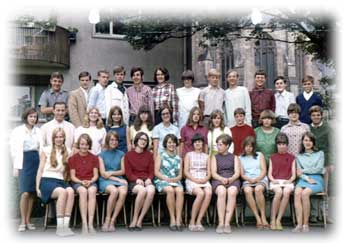

|  Oben: Horst, Ludwig, Jürgen, Roland, Georg, Heidemarie, Gabi, Eckart, Helmbert, Detlef, Franz, Wolfgang Mitte: Elke, Hr. Arzt, Annemarie, Renate, Monika, Monika, Rita, Brigitte, Rita, Marianne, Ursula, Klaus Unten: Alida, Marianne, Doris, Helga, Irmtraud, Inge, Sonja, Monika, Ulrike (Wolfgang fehlt) | |
|
Das Klassentreffen muss mangels reger Teilnahme leider ausfallen. Ich hoffe auf mehr Zusagen beim nächsten Mal! PS: Adressen geändert? Bitte Info an mich per Post oder unter detlef@bielohlawek.de Ich suche immer noch die Adresse von Heidemarie Scholz!!! | |